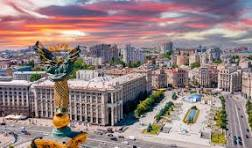

Зміст
Про країну
Україна — це незалежна держава, розташована у Східній Європі. Вона є однією з найбільших країн на континенті за площею та має вигідне географічне розташування.
Столицею України є Київ — одне з найстаріших міст Європи, яке має багату історію та культурну спадщину. Країна відома своїми родючими чорноземами, що робить її важливим аграрним регіоном.
Україна має власну мову, культуру та традиції, які формувалися протягом багатьох століть. Сьогодні вона активно розвивається та прагне до європейських стандартів життя.
Найбільші міста
Україна має багато великих і красивих міст, кожне з яких має свою історію та унікальну атмосферу.
Найбільшим містом є Київ — столиця країни, політичний та культурний центр. Харків відомий як освітній і науковий центр, а Львів приваблює туристів своєю архітектурою та європейським стилем.
- Київ
- Харків
- Львів
- Одеса
Культура
Українська культура є дуже багатою та різноманітною. Вона включає народні традиції, музику, танці та мистецтво.
Важливу роль відіграють народні свята, які збереглися до наших днів. Люди дотримуються традицій, передають їх з покоління в покоління.
- Різдво
- Великдень
- Івана Купала
Цікаві факти
Україна має багато цікавих особливостей, які роблять її унікальною серед інших країн.
Наприклад, тут знаходяться одні з найродючіших ґрунтів у світі, а також велика кількість історичних пам’яток.
- Одна з найбільших країн Європи
- Має родючі чорноземи
- Багата історія
Фото
